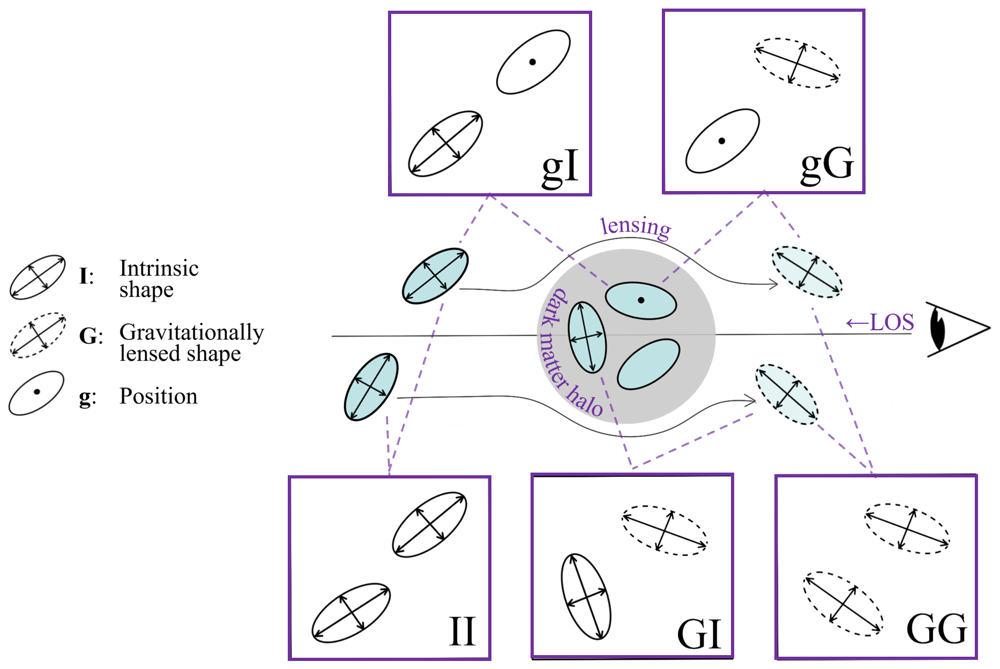

Galaxy IA can uniquely trace the large-scale tidal field and any cosmological
effects which leave an imprint on it. However, measuring this in practice is limited by difficulties in directly detecting IA. I propose a new solution:
the intrinsic alignment of small groups of galaxies, or "multipelts". Multiplets mostly consist of 2-4 galaxies within 1 Mpc/h of each other, and we measure
their orientations relative to the galaxy-traced tidal field. Using spectroscopic redshfits from the DESI Y1 survey, we detect intrinsic alignment out to projected
separations of 100 Mpc/h and beyond redshift 1. We find a simillar signal regardless of galaxy luminosity or color, which could make multiplet alignment a useful tool
for mapping the direction of the tidal field. Our detection demonstrates that galaxy clustering in the non-linear regime of structure formation preserves an interpretable
memory of the large-scale tidal field.
Links: Full Paper | Accessible Summary
IA can
significantly affect RSD measurements in large surveys like DESI. This arises due to an
orientation bias in DESI’s target selection, which is based on the galaxy light that falls within
a fiber aperture. This gives rise to anisotropic clustering in DESI’s galaxy
map, mimicking the same patterns used to measure RSD and the growth rate of structure. My work reveals a strong redshift dependence of this bias as fainter, redder galaxies are closer
to the selection cut and therefore more affected. It can bias measurements of RSD by about
1%, well above DESI’s required total constraint of around 0.5%. Without my corrections,
DESI would underestimate the growth rate of structure, biasing determinations of dark
energy’s strength and evolution
Initial Publication: Full Paper | Accessible Summary
With DESI Y1 spectra: Full Paper | Accessible Summary
 IA can Intrinsic Alignments (IA) refers to physical correlations involving galaxy shapes, galaxy spins, and the underlying cosmic web. Its characterization is an important aspect of modern cosmology, particularly in weak lensing analyses. I collaborated with a team of other IA experts to create a guide to common notations and concepts in the field. This resource is both a reference for those already familiar with IA and designed to introduce someone to the field by drawing from various studies and presenting a collection of IA formalisms, estimators, modeling approaches, alternative notations, and useful references.
Links: The IA Guide | See the IA Cheat Sheet